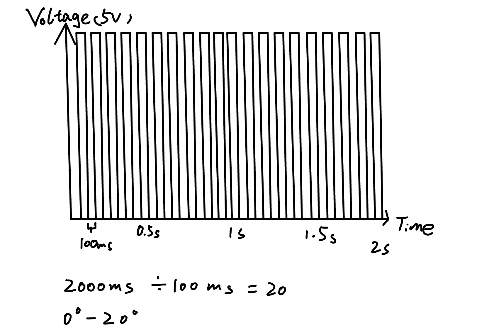

Circuit:

Here is my circuit, I connected the servo with pin 3 and I set Pin 4 as sendPin and Pin 2 as receivePin for my capacitive touch sensor.
Here is all the documentation for assignment 4!
This is the schematic for capacitive touch sensor, and I used 1 megaohm resistor for absolute touch to activate. And a schematic for my servo that connected to the arduino.
Here is my circuit, I connected the servo with pin 3 and I set Pin 4 as sendPin and Pin 2 as receivePin for my capacitive touch sensor.
#include <Servo.h>
#include <CapacitiveSensor.h>
Servo myServo; // create a servo object called myServo
CapacitiveSensor cs_4_2 = CapacitiveSensor(4,2); // set Pin 4 as sendPin and Pin 2 as receivePin
void setup() {
myServo.attach(3); // attaches the servo on pin 3 to myServo
cs_4_2.set_CS_AutocaL_Millis(0xFFFFFFFF); // turn off autocalibrate
Serial.begin(9600); // start serial communication and set the rate at 9600
}
void loop() {
long start = millis();
long sensorValue = cs_4_2.capacitiveSensor(30); // Retrieve the sensor value with 30 samples
Serial.print(millis() - start); // print the execution time in milliseconds
Serial.print("\t"); // tab
Serial.println(sensorValue); // print the sensor value
delay(10); // delay for 10 ms to limit data that print out to serial port
// if the sensor value is greater than 300(through observation of serial monitor),
// turn the servo to 180 degree, else, turn the servo to 0 degree
if (sensorValue > 300) {
myServo.write(180);
} else {
myServo.write(0);
}
}
Note: Some part of code used the example code from class. https://playground.arduino.cc/Main/CapacitiveSensor/index-2.html

This is my final result, when I touch the mental chopstick, the servo will turn to 180 degree, and then it will back to 0 degree.
Question 1:
Question 2: Your input device is slightly broken, leading it to give us an erroneous reading 1% of the time. How can we address this? Answer in (pseudo)code.
// if the sensor value is 2.5 times greater than previous value we can adjust it.
// Or we can set different conditions to deal with different circumstances
if (inputValue > 2.5 * prevInputValue) {
inputValue = prevInputValue;
}
Question 3: Your input device is slightly noisy, leading the measurement to randomly deviate from the true measurement up or down by 10%. How can we address this? Answer in (pseudo)code.
// we can take the average value of past values
inputValue = sumOfPastTenValue / 10